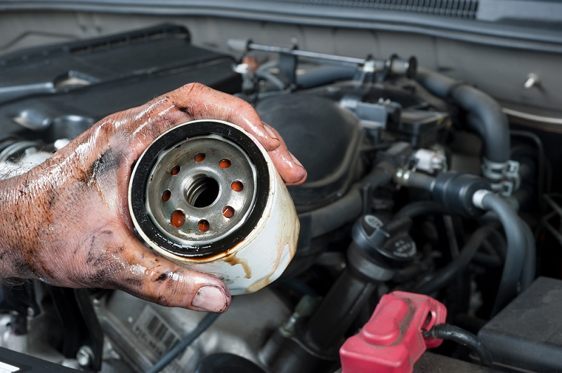

Filtro de Aceite
El filtro de aceite es un elemento básico para el buen funcionamiento del motor y tiene un coste tan bajo que recomendamos sustituirlo cada vez que sea necesario reemplazar el aceite lubricante.
Estos filtros se elaboran generalmente con papel de celulosa, algodón y materiales sintéticos mediante un sencillo sistema: el papel se coloca sobre un armazón metálico para que la presión del aceite no lo deforme y éste se enrosca sobre la pieza de soporte en el circuito de lubricación.
